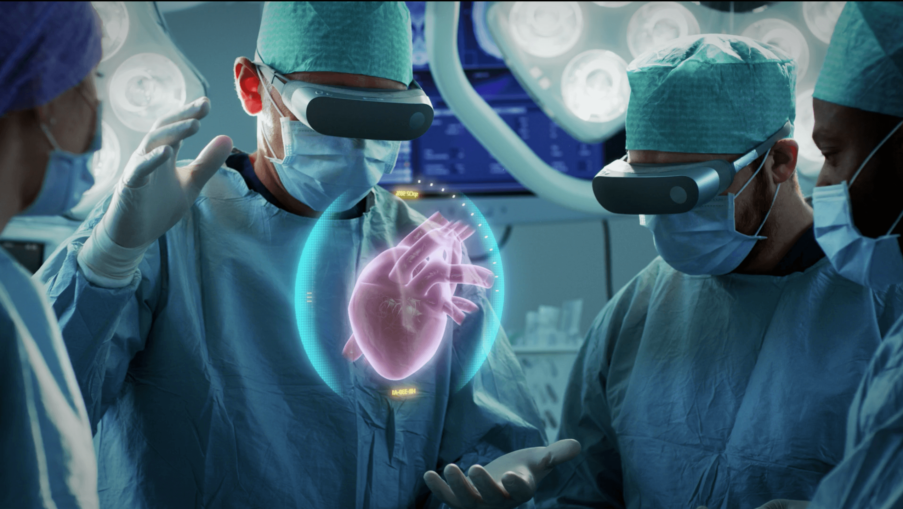

Серед медичних апаратно-комп’ютерних систем окремої уваги заслуговує робототехніка. Роботи-манекени, роботи-кур'єри, роботи-санітари – це вже реальність. З’явилася велика кількість роботів, які виконують надзвичайно складні маніпуляції. Наприклад, самозбірний робот ARES для проведення операцій без розрізу шкірних покривів. Проковтнуті пацієнтом окремі функціональні блоки всередині організму збираються в керований модуль, за допомогою якого проводиться хірургічне втручання.
Хірургічний робот Da Vinci дозволяє через невеликі отвори в шкірі виконувати найскладніші операції на внутрішніх органах. Чутливі маніпулятори точно відтворюють рухи рук хірурга, який сидить за пультом, при цьому фільтруючи тремтіння або випадкові різкі рухи.
 Медичною сенсацією є Robotic Glove. Це рукавичка, оснащена датчиками, які можуть виявити вібрації, звук і температуру, вона має акселерометр і звукову систему, яка сигналізує про органи, що вимагають негайної уваги. Рукавичка збирає і передає всю інформацію на комп'ютер.
Медичний робот AMIGO з'явився в 2010 році у Великобританії. Основна спеціалізація робота – операції по лікуванню аритмії серця. Він допомагає вводити через артерію катетер до пошкоджених ділянок серцевого м'яза.
Група голландських інженерів з Технологічного університету в Ейндховені у 2009 р. отримала дозвіл від Єврокомісії на роботу в напрямку об'єднання розрізнених роботів по всьому світу в одну єдину інформаційну мережу. Так з'явивсяпроект RoboEarth , до якого увійшли дослідники з багатьох країн. Одним з найбільш великих учасників проекту став концерн Philips. Головна ідея проекту RoboEarth – створити універсальну систему управління з використанням інтернет-технологій і локальних комп'ютерних мереж, щоб зробити її значно доступнішою для користувачів. Більше інформації можете знайти тут
Лише десяток років тому неможливо було уявити, що хірургічне втручання буде використовуватися при наданні невідкладної медичної допомоги, при інсультах та інфарктах міокарда. Але технології досягли такого рівня, що за допомогою мікрохірургії пацієнт може отримати швидку та якісну медичну допомогу і вже за декілька днів залишити медичний заклад.Сьогодні медицина стоїть на межі впровадження декількох захопливих технічних інновацій. Нові мініатюрні S.M.A.R.T. технології відкривають якісно новий рівень діагностики та лікування багатьох захворювань.
Перспективи біологічних принтерів величезні. Лише уявіть – повнофункціональну нирку, створену з власних клітин пацієнтів. І перші кроки в цьому напрямку вже зроблені.На початковому етапі створюється колоїдна суміш з клітин пацієнта або донора для забезпечення киснем та поживними речовинами і подальшого росту. Потім клітини осаджують на стромі (основі), на якій шар за шаром формується біологічна тканина чи орган. На останньому етапі тканину інкубують до тих пір, поки орган чи частина органу не стане життєздатним.
S.M.A.R.T. датчики та скальпелі призначені для виявлення та видалення тканин певного типу, ракових, судин, нервових тощо. Основна ціль цієї технології: за допомогою мікрохірургії, лікувати церебральні аневризми, створювати анастомози кровоносних судин, видаляти пухлини головного мозку та ін.В якості метода візуалізації будуть використовувати спектроскопію, магнітно-резонансну томографію, механічний та електричний імпеданс. Терапевтичним інструментом може бути високоінтенсивний сфокусований ультразвук, акустична та радіочастотна енергія.
| Назва | Винахідник | Рік | Ціна | |
|---|---|---|---|---|
| Розробки | Amigo | Дональд Кнут | 2010 | 10 млн$ |
| 1 | 2 | 3 | 4 | |
| 5 | 6 | 7 | 8 | |
| 9 | 10 | |||